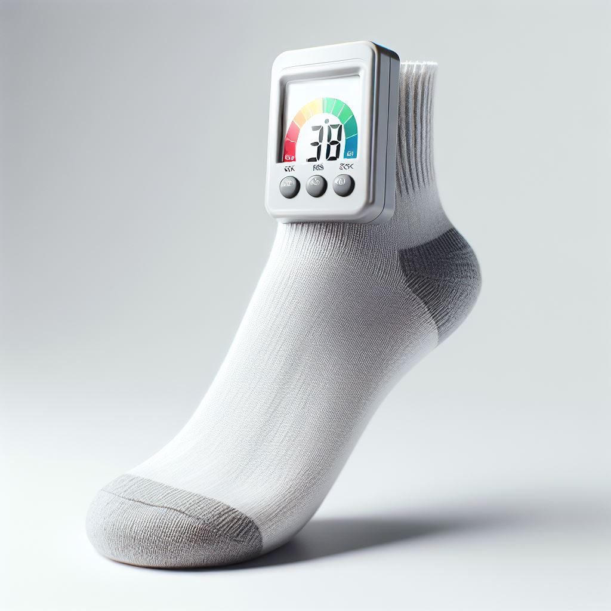
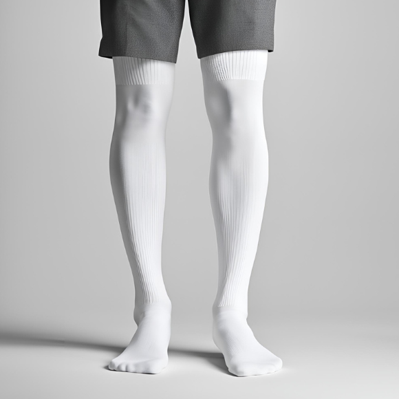

Sock Check Meter
$150.00
The sock check meter is one of our newest creation. It works by holding against a perpatrators socks and the meter will indicate on the screen the levels of lameness and if the sock length is adequate.
Down Foo Scouter
$3000.00
The Foo scouter is a visual aid that is worn over the ears and eyes. It helps long distance hearing and can show you a foos power level.

Regulation "Calcetines"
$20.00
Good quality socks that are of acceptable length.